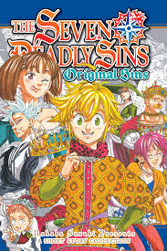

the seven deadly sins
The Seven Deadly Sins are a band of knights in the land of Britannia (ブリタニア, Buritania) who had disbanded ten years earlier after being framed for plotting a coup against the Liones Kingdom (リオネス王国, Rionesu Ōkoku), the Holy Knights who sequestered them before taking control in the wake of a rebellion they organized. Liones' third princess, Elizabeth Liones, finds the Seven Deadly Sins' leader, Meliodas, before they track down his comrades so they can clear their names and liberate Liones from the Holy Knights, who were manipulated by a demon named Fraudrin into unsealing the Demon Race from their prison.